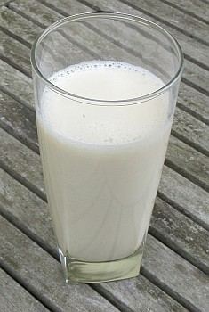

Du Milk-é-Pantch

- un pot d'lait - adouochi atout du chucre -
- y gratter un tout p'tit mio d'muscade (ou eune pétite pînchie d'cannelle)
- eune démié-vèrrée (ou d'mié-tâssée à thée) d'rhonme, ou pus,
- et au mains siêx oeufs d'battus.
Les uns bouoillaient l'lait, d'autres lé faisaient sèrvi cru. Et d'aut's acouo, l'aimaient mus frais trait à sin' dé jeu.
Les jannes gens sustout (fil'yes et garçons) lus l'vaient d'bouon matîn l'jour dé la St. Jean, auprès mînniet du 23 d'juin, et allaient traithe eune vaque ou deux, à la dêrobée, siez les vaîsîns. Et pis i' s'estchîvaient ès poulaillèrs pouor des oeufs. Il' allaient lus tchiaûder et, pus tard dans la journée, il' ajoutôtaient l'rhonme au lait et vèrsaient ch'la sus l's oeufs d'battus et pis y m'ttaient l'chucre et la muscade (ou cannelle), et ch'la faisait chein qu'nou-s-app'lait du Milk-é-Pan'tch. I' s'en rigalaient, lus tchoeu content.
Viyiz étout: